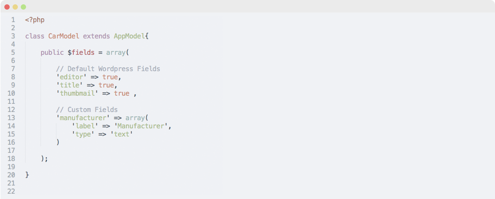

How this works?
Alter provides the way to develop model-based Wordpress themes, using models you can easily create post types, custom meta-boxes, and access the post properties.
Stop using Wordpress functions
The Wordpress-way to get post properties like thumbnails and custom post fields is very painful, with Alter we made this simple.

And the best, it's free
You can help us to improve the Alter Framework, contribute with the repository on Github.
Fork on Github